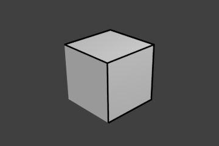

Набір Ліній -- Line Set¶
Орієнтир -- Reference
| Panel: |
|---|
Набір ліній вибирає серед ліній (ребер, країв), визначених Freestyle, які з них будуть рендеритися, зображуватися, використовуючи прикріплений до нього стиль ліній -- line style, за допомогою різних методів.
Freestyle Line Set panel.
Вибір За -- Selection By¶
Видимість -- Visibility¶
Є три варіанти вибору ребер, країв за видимістю.
- Видиме -- Visible
- Рендеряться тільки лінії, не загороджені жодною з поверхонь.
- Сховане -- Hidden
Рендеряться лінії, що загороджені принаймні однією поверхнею.

Представлення концепції видимих та схованих ребер, країв від LightBWK (Sample blend-file)
- Діапазон Кількісної Невидимості -- QI Range
QI скорочено від Quantitative Invisibility -- Кількісна Невидимість. Рендеряться лінії, загороджені заданою кількістю поверхонь у даному діапазоні.
- Старт -- Start та Кінець -- End
- Мінімальна/максимальна кількість загороджувальних поверхонь для рендерингу ліній.

Представлення концепції QI Range, Start: 3, End: 7, від LightBWK (Sample blend-file)
Типи Країв -- Edge Types¶
Типи країв -- це базові алгоритми для вибору ліній з геометрії. При використанні редактора параметрів ви повинні увімкнути принаймні один тип країв, щоб отримати вивід рендера, однак кілька типів країв можуть комбінуватися в один набір ліній. Типи країв можуть також виключатися з розрахунку, клацком на кнопці X біля них.

Приклади деяких базових типів країв: Силует -- Silhouette (зелений), Складка -- Crease (чорний), Границя -- Border (синій) та Позначки Ребер -- Edge Marks (червоний) (File:EdgeType.zip by LightBWK).
- Силует -- Silhouette
- Рисує силуети навколо ваших закритих об'єктів; це часто добре для органічних об'єктів (як Сюзанна і Сфера), та погано для гострих країв, як коробка. Він не може рендеритися на відкритих сітьових об'єкта, як відкриті циліндри та плоскі площини. На вивід впливає устава карти огляду Kr Derivative Epsilon.
- Складка -- Crease
Показує тільки краї, чиї суміжні грані формують кут, більший за визначений для карти огляду уставою Crease Angle.

Crease Angle proof of concept for 121° by LightBWK (the blend-file).
- Границя -- Border
- Границя призначена для відкритих/незамкнутих країв сітей; відкритий циліндр має відкритий край вгорі та внизу, а площина є відкритою з усіх сторін. Очниці Сюзанни є відкритим краєм. Усі відкриті краї будуть мати рендерені лінії. Це залежить від структури сіті.
- Позначки Ребер -- Edge Marks
- Рендерить позначені ребра. Дивіться детальніше тут -- Edge Marks.
- Контур -- Contour
- Рисує зовнішні краї та внутрішню відкриту границю.
- Зовнішній Контур -- External Contour
- Рисує контурні лінії, але тільки для зовнішніх країв, ребер.

Ліва пара: Contour; Права пара: External Contour.
- Навідний Контур -- Suggestive Contour
- Рисує деякі лінії, які б формували контур сіті, якщо оглядвікно було зсунуто. Залежно від устав карти огляду Kr Derivative Epsilon та Sphere Radius (додаткова інформація: File:Manual-2.6-Render-Freestyle-PrincetownLinestyle.pdf).
- Рубіж Матеріалу -- Material Boundary
- Рисує лінії у місцях, де два матеріали зустрічаються на тому ж об'єкті.
- Гребінь і Впадина -- Ridge & Valley
- Рисує гребені та впадини. Залежить від устави карти огляду Sphere Radius.
Позначки Ребер -- Edge Marks¶
Устава Edge Mark на панелі Line Set.
In Edit Mode you can mark "Freestyle Edges" in the same manner you can mark "Seams" for UV unwrapping or "Sharp" for edge split. These marked edges are available to render when you select Edge Mark.
Робиться це в такий спосіб:
- Виділяється сітьовий об'єкт та входиться в Edit Mode.
- Виділяються ребра, які ви хочете позначити.
- Натискається Ctrl-E та обирається «Позначити Ребра Freestyle» -- Mark Freestyle Edge.
Позначки ребер корисні, коли ви хочете прорисувати лінії уздовж певних ребер сіті. Приклади нижче пояснюють використання позначок ребер.

Marking Freestyle Edges in Edit Mode.

Рендер без Edge Marks. |

Рендер з увімкненою Edge Marks. |
При увімкненні Edge Marks попередньо позначені лінії завжди рендеряться. Ви можете бачити чорні контурні лінії та сині лінії, що зроблені за допомогою позначок ребер.
Для чого добрі позначки ребер?
- Коли вам потрібно рендерити позначки на практично плоскій площині, коли інші типи країв не можуть виявити будь-яку лінію.
- Коли ви хочете повністю контролювати рендеринг країв. Часто використовується для країв квадратних форм.
- При позначенні усієї базової сіті для рендерингу з метою попереднього перегляду цієї базової сіті.
Для чого не добрі позначки ребер?
- Округлі зовнішні краї, ребра (натомість використовуйте Contour/External Contour/Silhouette).
Позначки Граней -- Face Marks¶
Face Mark options.
Для установлення позначки грані:
- Виділіть сітьовий об'єкт та увійдіть в Edit Mode.
- Виділіть грані, які ви хочете позначити.
- Натисніть Ctrl-F та оберіть «Позначити Грані Freestyle» -- Mark Freestyle Face.
Позначки граней корисні для вилучення ліній з певних областей сіті.
У цьому прикладі, дві грані стандартного куба позначені, на ілюстрації зліва. Справа на ілюстрації -- рендер без активованих позначок граней.

Marked faces (Edit Mode). |

Render output. |
Вибір лінії може керуватися через включення або опції граней:
- Включно -- Inclusive / Виключно -- Exclusive
- Включити чи виключити ребра, що відповідають умовам позначки граней з набору ліній.
- Одна Грань -- One Face
- (Зне)виділяє усі ребра, які мають одну чи обидві сусідні грані позначеними.
- Обидві Грані -- Both Faces
- (Зне)виділяє усі ребра, які мають обидві їх сусідні грані позначеними.
Ілюстрація нижче показує результатні комбінації.

Inclusive, One Face. |

Inclusive, Both Faces. |

Exclusive, One face. |

Exclusive, Both Faces. |
Група -- Group¶
Ви можете включати або виключати об'єкти для розрахування ліній на основі їх належності до групи.
- Група -- Group
- Ім'я групи об'єктів для використання.
- Включно -- Inclusive / Виключно -- Exclusive
- Включати чи виключати лінії з цих об'єктів у цей набір ліній.
Границя Зображення -- Image Border¶
Якщо увімкнено, то Freestyle враховуватиме геометрію тільки у межах границі зображення для розрахування ліній. Це скорочує часу рендерингу, але збільшує проблеми продовжуваності, коли геометрія виходить та входить в огляд камери.